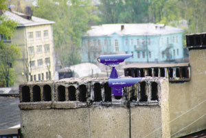
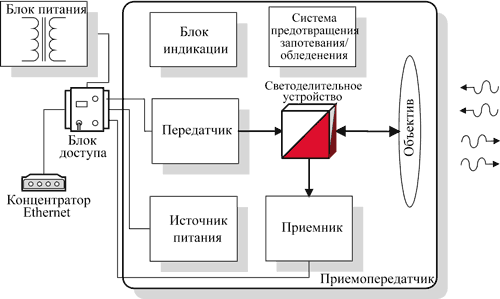
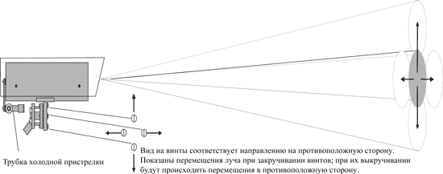
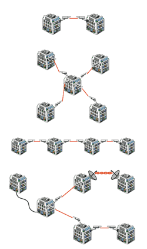

Виктор Михеев
mve@acropolis.ru
Вычислительные сети предприятий в нашей стране развиваются все более быстрыми темпами. Поэтому любая компания рано или поздно вынуждена решать две основные проблемы - модернизации существующей сети в сторону увеличения мощности всех ее компонентов (рабочих станций, активного и сетевого оборудования) и реорганизации обработки информации. Задача объединения в единую сеть нескольких подразделений (склад, головной офис, удаленный офис, бухгалтерский отдел, конструкторское бюро и т.д. и т.п.) зачастую возникает не сразу, а решать ее начинают лишь тогда, когда разрозненная обработка информации приводит к потере времени и становится экономически невыгодной. Помимо закупки и установки активного сетевого оборудования необходимо организовать линии связи между подразделениями, для чего обычно используется медный или оптический кабель. Однако его прокладка часто влечет за собой дополнительные затруднения - необходимо получить разрешение на прокладку кабеля, особенно в городских условиях, а затем потратить много средств и времени на создание новых коммуникаций. При этом зачастую существующие линии связи уже не могут справиться с дополнительным трафиком, а получить в аренду телефонные линии от оператора нет возможности, либо качество связи по арендованным линиям очень плохое.
Поэтому в ряде случаев выгоднее и удобнее оказывается использовать беспроводные соединения. Более того, они незаменимы там, где прокладка кабеля физически или технически невозможна. Сегодня решения на базе беспроводного доступа предлагают почти все крупные системные интеграторы. Как правило, речь идет о радиодоступе (RadioEthernet). При построении беспроводных сетей используется сотовая, спутниковая и пакетная радиосвязь; беспроводные мосты; радиоинтерфейсы; лазерная связь и другие технологии и устройства. Для соединения отдельных ЛВС могут использоваться оптические линии, работающие в инфракрасном участке спектра.

В табл. 1 приведены сравнительные характеристики о том, во что обойдется организация различных каналов связи и сколько времени потребуется на установку системы.
Таблица 1. Стоимость и время организации различных типов скоростных каналов связи
| Тип канала | Ориентировочная стоимость | Время на подготовку и проведение монтажа |
| Медный кабель | 300-500 долл. за 1 км | Подготовка работ и прокладка: до 1 месяца; установка HDSL-модемов: несколько часов |
| Волоконно-оптический кабель | До 5-6 тыс. долл. за 1 км | Подготовка работ и прокладка: 1-2 месяца |
| Радиоканал | 7-100 тыс. долл. за комплект | Подготовка работ: 2-3 месяца; установка: несколько часов |
| Оптический канал | 2-4 тыс. долл. за комплект | Подготовка монтажа: 2-3 дня; установка: 2-3 часа |
| Лазерный канал | 12-22 тыс. долл. за комплект | Подготовка работ: 1-2 недели; установка: несколько часов |
В общем случае применение беспроводных оптических каналов связи (БОКС) целесообразно при решении следующих задач:
- создания основного и/или резервного канала связи;
- объединения нескольких локальных вычислительных сетей;
- решения проблемы "последней мили";
- в аварийной ситуации, когда необходимо быстрое развертывание связи;
- организации связи типа "точка-точка" при максимальном удалении между "точками" до 1 км;
- создания магистральных каналов;
- организации доступа к общим и ведомственным сетям передачи данных или для доступа в Интернет.
Наиболее типичный случай применения оптических каналов связи - это создание беспроводных соединений между отдельными зданиями, разделенными преградами: дорогами, площадями, железнодорожной полосой, водной преградой, промышленной зоной и т.д.
Для кого представляют интерес такие решения? Потенциальными заказчиками могут быть предприятия:
- расположенные в нескольких отдельно стоящих зданиях на расстоянии до 1 км друг от друга;
- имеющие интенсивный трафик данных, несколько локальных вычислительных сетей и удаленных терминалов;
- предъявляющие повышенные требования к надежности функционирования всей сети;
- решающие задачу распределенной обработки информации в единой корпоративной сети.
К преимуществам беспроводных оптических каналов связи можно отнести сравнительно низкую стоимость оборудования, высокую скорость (до 10 Мбит/с) и надежность передачи информации. Такие каналы обладают повышенной устойчивостью к помехам и работают в любых погодных условиях (снег, дождь и т.д.). На организацию беспроводной связи не требуется разрешения органов Госсвязьнадзора. Сроки установки и ввода системы в эксплуатацию минимальны - от 2 до 3 ч (см. табл. 1). Компактность и малый вес существенно облегчают как установку, так и демонтаж системы. Следует оговориться, что при установке системы, несмотря на малые сроки, нужен определенный навык. Поэтому лучше обратиться к специалистам, которые сумеют выполнить все требования, предъявляемые к монтажу, и будут нести ответственность за работу системы.
Спектр БОКСов достаточно широк и подходит для большого круга задач. Характеристики некоторых устройств, предлагаемых на российском рынке, приведены в табл. 2. В частности, петербургская компания "Акрополис" (http://www.acropolis.ru) устанавливает устройства БОКС отечественного производителя "Катарсис", показавшие хорошую надежность и возможность эксплуатации практически в любых погодных условиях. В настоящий момент "Акрополис" предлагает три модели, предназначенные для замены кабельных соединений в локальных сетях стандарта Ethernet 802.3 (10Base-T). Это БОКС-10МЛ (рабочая дистанция до 250 м, 10 Мбит/с, симплекс), БОКС-10М (рабочая дистанция до 500 м, 10 Мбит/с, симплекс) и БОКС-10МПД (рабочая дистанция до 1000 м, 10 Мбит/с, дуплекс). Кроме того, выпускается еще около десяти моделей, рассчитанных на рабочие расстояния от 0,5 до 3 км и скорость передачи от 64 Кбит/с до 100 Мбит/с, в том числе и для передачи потоков Е1 на расстояние до 2 км. Это оборудование можно использовать в цифровых системах передачи типа ИКМ-30, распространенных в российских телефонных сетях. Отметим еще, что теоретическое (расчетное) расстояние превышает рабочее в три раза.
Таблица 2. Устройства для создания оптических каналов связи
| Название устройства | Производитель | Стандарты сигналов | Дистанция | Тип излучателя | Цена, долл. |
| ЛАЛ2+ | ИТЦ, Новосибирск | G.703, IEEE802.3 | До 1000 м До 5000 м |
Лазер | 7030 9230 |
| МОСТ 100/500 | Рязанский приборостроительный завод | G.703, IEEE802.3, IEEE802.3u | 1200-1400 м | Лазер | 4890 |
| БОВ-2М | ОКБ МЭИ | G.703, IEEE802.3 | 1500 м | Светодиод | 8450 |
| БОС-ЕМ | 1000 м | 4125 | |||
| БОКС-10М | "Катарсис" | IEEE802.3 | 500 м | Светодиод | 2450 |
| БОКС-10МПД | G.703, IEEE802.3 | 1000 м | Светодиод | 4344 |
Базовое изделие семейства - БОКС-10М предназначено для создания канала передачи данных стандарта Ethernet. Оно состоит из двух одинаковых приемопередатчиков (оптических труб), устанавливаемых на обеих сторонах канала связи. Каждый блок состоит из приемопередающего модуля, козырька, интерфейсного кабеля (длиной 5 м), системы наведения, кронштейна, блока питания и блока доступа.
Приемопередающий модуль включает передатчик остронаправленного оптического излучения ИК-диапазона (состоящий из инфракрасного полупроводникового светодиода) и приемник - высокочувствительный светодиод. Светодиоды работают на длине волны 0,87 мкм.
Принцип работы
Рассмотрим процесс передачи данных с использованием оптического канала (рис. 1). Электрический сигнал с порта Ethernet поступает по интерфейсному кабелю на передатчик, где светодиод преобразует его в ИК-излучение, которое проходит через светоделительное устройство и фокусируется объективом в узконаправленный луч. Пройдя через атмосферу, часть излучения попадает на объектив другого приемопередатчика, фокусируется и светоделительным устройством подается на приемник. Приемник преобразует ИК-излучение в электрический сигнал, который по интерфейсному кабелю поступает на порт Ethernet. Источник питания обеспечивает работу передатчика, приемника, блока индикации и системы предотвращения запотевания/обледенения объектива.
|  |
| Рис. 1. Общий принцип работы устройства семейства БОКС.
|
Надежность передачи достигается в первую очередь за счет правильного наведения и энергетического запаса. При правильном наведении энергетический запас системы должен быть четырехкратным для моделей БОКС-10МЛ и БОКС-10М (иными словами, закрывая 4/5 линзы объектива, мы имеем надежный 100%-ный канал при хорошей погоде). Модель БОКС-10МПД имеет 16-кратный энергетический запас. В этом случае доступность канала в течение года будет составлять 99,7-99,9%. Чем выше энергетический запас системы, тем выше надежность канала, которая в идеальном случае достигает 99,99%.
Кроме того, надежная работа системы обусловлена методом доступа к среде передачи CSMA/CD, используемым в сетях Ethernet. Любая коллизия - ухудшение погодных условий или появление кратковременной преграды приводит к повторной передаче пакета на физическом уровне, но даже если случится так, что коллизия не будет услышана (это возможно, например, в моделях БОКС-10МЛ и БОКС-10М из-за того, что время переключения с приема на передачу, конечно, и равно 4 мкс) и пакет будет потерян, то протоколы более высокого уровня, работающие с гарантией доставки, отследят это происшествие, и запрос будет повторен.
Соединение через атмосферу никогда не дает 100%-ной гарантии наличия связи, поэтому возможно, что, например, в плохих погодных условиях (сильный снежный заряд, очень плотный туман, мощный ливень и т.д.) канал не будет работать. Но в этом случае прекращение связи будет временным, и после улучшения условий связь сама восстановится. Чтобы уменьшить вероятность потери связи по метеоусловиям, необходимо ставить модели с большей рабочей дистанцией, что повышает энергетику светового потока и, как следствие, надежность системы в целом.
Еще одно условие надежной и стабильной работы системы - совпадение центра геометрического пятна освещенности передатчика с центром объектива приемника. Ветровые нагрузки, а также механические и сезонные колебания опоры могут вывести систему из зоны пятна освещенности, в результате чего связь исчезнет. Вся конструкция систем и размер пятна освещенности от передатчика согласованы таким образом, чтобы вероятность потери связи из-за вышеперечисленных причин была сведена к минимуму. При наведении решается следующая геометрическая задача: из точки, полученной при грубом наведении, требуется переместить систему в геометрический центр пятна освещенности от светового потока излучателя, окончательно зафиксировав систему наведения в этом положении. С помощью стандартной системы наведения эта задача решается за 35 -- итераций.
|  |
| Рис. 2. Схема системы наведения.
|
Монтаж
Приемопередатчики можно устанавливать на поверхности крыш или стен. БОКС монтируется на металлической опоре, которая позволяет регулировать угол наклона по горизонтали и вертикали. Приемопередатчик подключается через специальный блок доступа, в качестве соединительных кабелей обычно используют витую пару категории 5 (UTP). Со стороны оптического канала блок доступа соединяется с приемопередатчиком интерфейсным кабелем, в качестве которого используется обычная витая пара, снабженная специальными разъемами. С другой стороны блок доступа соединяется с компьютером или сетевым устройством (маршрутизатором или коммутатором).
Блок доступа и блок питания приемопередатчика всегда устанавливают внутри помещения рядом друг с другом. Их можно крепить на стене или размещать в таких же стойках, какие используются для оборудования ЛВС.
Для надежной работы необходимо учесть следующие рекомендации:
- здания должны находиться в пределах прямой видимости (на всем пути луч не должен встречать непрозрачных препятствий);
- лучше, если устройство будет находиться как можно выше над землей и в труднодоступном месте;
- при установке системы следует избегать ориентации приемопередатчиков в направлении восток -- запад (такое специфическое требование объясняется достаточно просто: солнечные лучи на восходе или закате могут на несколько минут перекрыть излучение, и передача прекратится);
- вблизи от места крепления не должно быть моторов, компрессоров и т.д., поскольку вибрация может привести к сдвигу трубы и разрыву соединения.
Типы соединений
Длина наиболее простого типа соединения - "точка-точка" варьируется в зависимости от конкретной модели оборудования. При создании такого соединения следует всегда выбирать трассу таким образом, чтобы исключить появление в будущем непреодолимых препятствий (например, нужно учитывать рост деревьев). Приемопередатчики можно устанавливать как на крыше здания, так и на стене. В зависимости от типа решаемой задачи могут использоваться схемы "точка доступа" и "магистраль". На практике наиболее распространена комбинированная схема. Она позволяет моделировать коммуникационную инфраструктуру в соответствии с решаемой задачей, целесообразностью, ценой и эффективностью. В умелом применении всех способов и технологий и заключается искусство системной интеграции.
|  | Рис. 3. Типичные схемы соединений. Сверху вниз: точка-точка, точка доступа, магистраль, комбинация разных схем.
|
Примеры применения БОКС
В практике петербургской компании "Компьютерные системы Акрополис" есть опыт применения БОКСов для объединения в единую корпоративную сеть вычислительных средств предприятия ОАО "Пивоваренная компания Тульское пиво". Этот проект показал, что оборудование стабильно работает в условиях прямой видимости соединяемых объектов на расстояниях до 500 м (модель БОКС-10М) и до 1000 м (модель БОКС-10МПД). Надежная связь при этом обеспечивается практически в любых погодных условиях. Канал позволяет обмениваться данными на скоростях 10 Мбит/с (комплект 10М) или 20 Мбит/c (для 10МПД). Качество связи аналогично тому, что имеет место при использовании обычного медного или оптоволоконного кабеля.
В целом решение об установке ИК-оборудования для организации корпоративной сети пивоваренного завода позволило снизить общую стоимость проекта (включая стоимость оборудования и проделанных работ) на 60-70%.
| Технические характеристики БОКС-10М | |
|---|---|
|
Общие
|
|
| Скорость передачи информации | 10 Мбит/с |
| Режим передачи | Полудуплексный, по стандарту IEEE 802.3 |
| Рабочая дистанция | до 500 м |
| Режим работы | Непрерывный |
| Вероятность возникновения ошибки | Менее 10-9 |
| Время наработки на отказ | Не менее 100 000 ч |
| Источник излучения | Инфракрасный светодиод |
| Приемник | Высокочувствительный фотодиод |
|
Сетевые
|
|
| Интерфейс | Ethernet 10Base-T |
| Импеданс интерфейсного кабеля | UTP 5cat - 100 Ом |
|
Физические
|
|
| Длина волны | 0,87 мкм |
| Частота | 344 828 ГГц |
| Выходная мощность передатчика | 200 мВт |
| Расходимость луча | Не более 2 м на расстоянии 500 м |
|
Электрические
|
|
| Входное питание (на блок питания) | 220 В+10%, 50 Гц |
| Выходное питание (от блока питания) | 12 В+10%, 50 Гц |
| Потребляемая мощность при включенном термостате системы | Не более 40 Вт |
|
Атмосферные условия
|
|
| Рабочий диапазон температур | От -40 до +50 °С |
| Отн. влажность окружающего воздуха | До 100% (во всем диапазоне температур) |
| Рабочий диапазон атмосферного давления | 84 -- 106,7 кПа |
|
Размеры и исполнение (каждого корпуса)
|
|
| Габариты одного устройства (без кронштейна) | 505x142x250 мм |
| Масса одного устройства | Не более 8 кг |
| Исполнение | Всепогодное, с термостатом и системой предотвращения запотевания оптики |